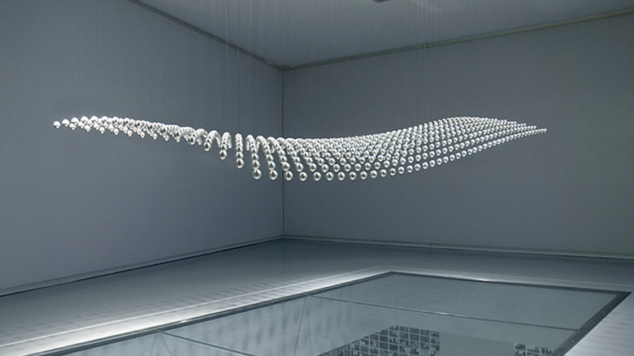

digital

Joachim Sauter
https://www.youtube.com/watch?v=HVhVClFMg6Y-どんな人
ドイツのメディアアーティスト、デザイナーです。デジタルをどのように一つのコンテンツやスタイルとして活用できるのかといった実験的な作品を作っています。
-解説
714個の鉄球が天井に吊るされています。天井には鉄球ごとにそれぞれ高さを調整するデバイスがつけられており、コンピューターの制御によって鉄球がCGのようになめらかに動きます。この作品はBMWミュージアムに展示されており、BMWがこれまで世に送り出した歴代名車のアウトラインを描きながら形を変えていきます。
-好きなところ
鉄球ひとつひとつを制御することで、立体的になめらかに変化していく形が綺麗だと思いました。鉄球以外でやっても面白そうですね。